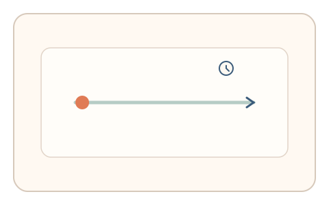
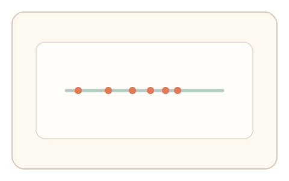
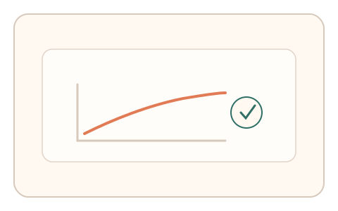

#98
Morphological Analysis - Combination Batches
已扩展
速度衰减签名
要求用户沿直线持续拖拽 3 秒，记录速度衰减斜率与微抖动作为验证信号。
概念原文
用户沿直线持续拖拽 3 秒，系统记录速度衰减斜率并与群体基线比对。任务结构为持续追踪，信号形态为轨迹动力学。
以“自然速度衰减”识别真实操控。
研究背景
人类在持续拖拽中会出现自然的速度衰减与微纠偏，速度曲线并非恒定。通过测量衰减斜率与波动形态，可区分脚本化的恒速轨迹。
核心机制
- 提供直线路径与 3 秒持续拖拽任务。
- 记录速度随时间的衰减曲线。
- 采集微抖动与纠偏频率。
- 与群体基线分布进行比对。
用户流程
- 步骤 1：用户看到直线拖拽任务。
- 步骤 2：用户保持拖拽完成 3 秒。
- 步骤 3：系统分析速度衰减并判定。
判定信号
速度衰减斜率
人类持续动作会出现稳定的衰减趋势。
微抖动频率
生理噪声在轨迹中具有可辨结构。
判定逻辑
衰减斜率与波动需落在人类分布区间；过度恒速或过度平滑判异常。
对抗面
- 脚本保持恒速直线拖拽
- 重放真实用户的速度曲线
防御与缓解
- 随机化拖拽方向与距离
- 引入轻微扰动降低模板化
- 叠加停顿与抖动信号进行多信号判定
可达性与风险
提供更短时长与更大路径，允许键盘替代拖拽。
- 设备采样率不足影响速度曲线
- 手部障碍用户可能出现误拒
可视化状态

状态 1：直线拖拽
持续拖拽 3 秒。

状态 2：速度衰减
速度随时间自然衰减。

状态 3：曲线判定
比较衰减曲线与抖动谱。
参考资料
Motor control
说明持续动作中的控制与衰减特征。
Speed%E2%80%93accuracy tradeoff
说明速度变化与控制策略的关系。